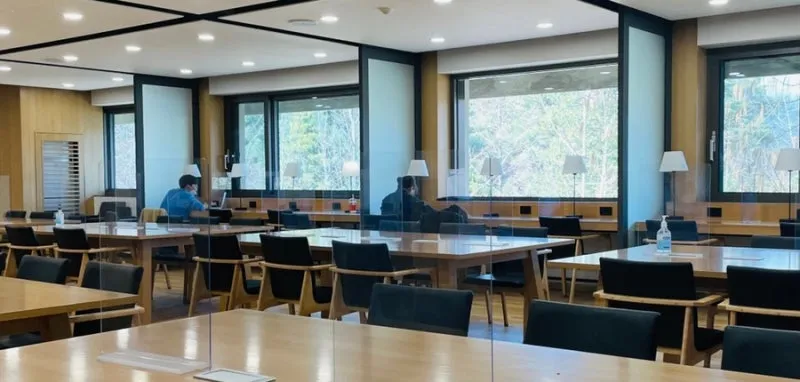

나에게 의미 있는 이유
창가로 들어오는 햇빛을 받으며 과제를 하거나 잠시 쉬기 좋은 곳입니다. 넓은 책상에서 혼자 집중할 수도 있고 친구와 함께 공부할 수도 있어, 수업 사이에 자주 찾고 싶은 장소라는 점이 마음에 듭니다.
위치
성심교정 니콜스관(N관) 4층에서 찾을 수 있습니다.
관찰 포인트와 추천 활동
- 창가 자리에 앉아 창밖 풍경과 들어오는 빛을 관찰해 봅니다.
- 넓은 책상에서 다음 수업의 자료를 읽거나 친구와 함께 과제합니다.
- 이용한 자리를 깨끗하게 정리하고 다른 학생의 공부를 방해하지 않도록 배려합니다.